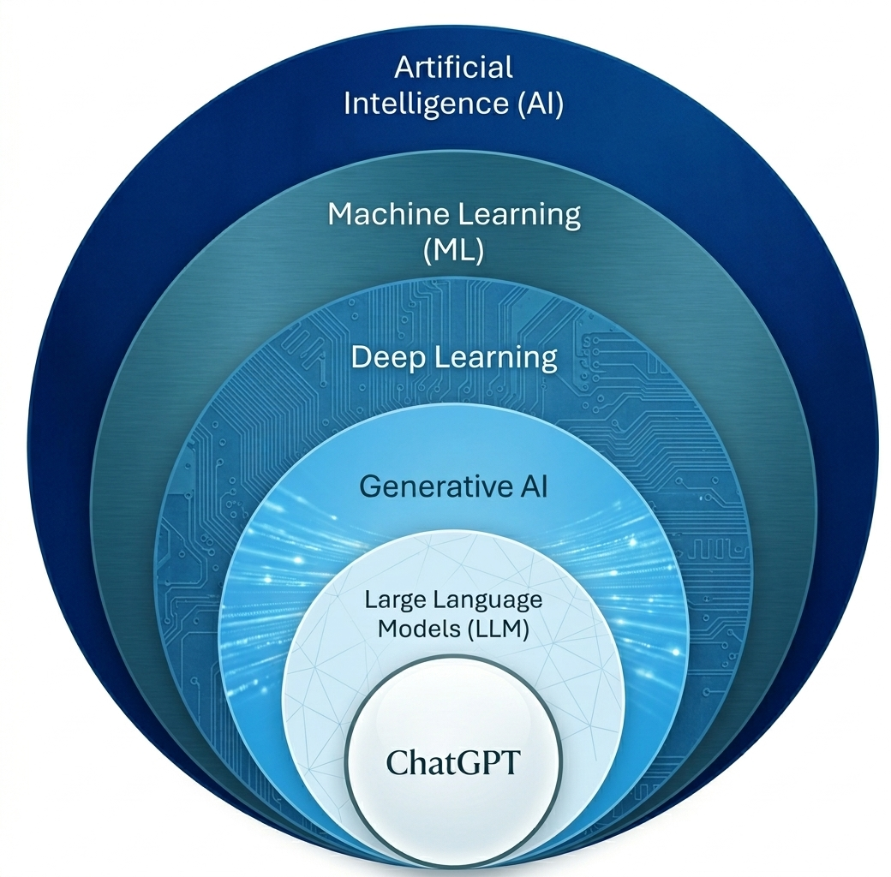

Understanding the AI Landscape
To understand Large Language Models, we must first recognize their place within the broader field of Artificial Intelligence.
- Artificial Intelligence (AI): The broadest field encompassing all technologies that aim to make machines mimic human intelligence.
- Machine Learning (ML): A subset of AI focusing on algorithms that improve automatically through experience and data.
- Deep Learning (DL): A specialized subset of ML that uses multi-layered neural networks to learn complex representations.
- Generative AI (GenAI): A branch of Deep Learning dedicated to creating new content (text, images, audio) rather than just classifying data.
- Large Language Models (LLM): Models specifically architected for language processing at a massive scale.
